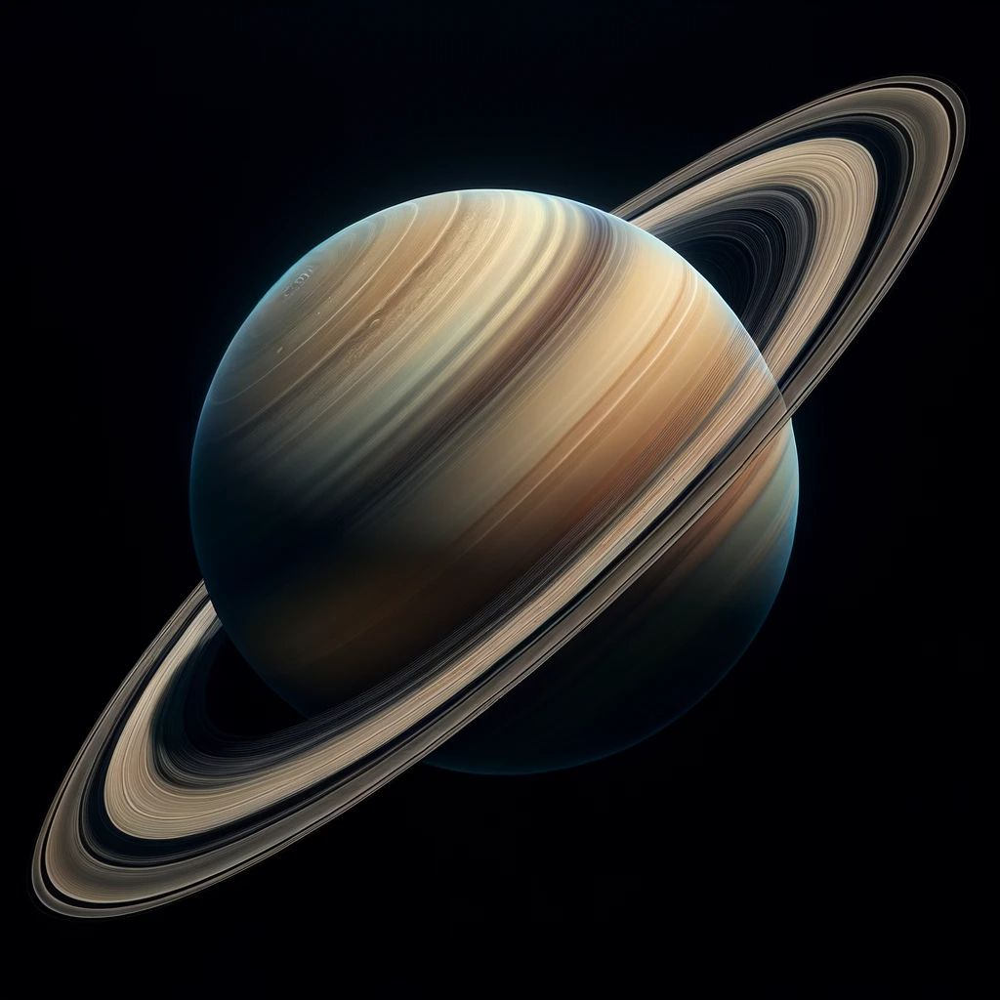

The solar system has one star, eight planets, five officially named dwarf planets,
hundreds of moons, thousands of comets, and more than a million asteroids.
Our solar system is located in the Milky Way, a barred spiral galaxy with two major arms,
and two minor arms. Our Sun is in a small, partial arm of the Milky Way called the Orion Arm,
or Orion Spur, between the Sagittarius and Perseus arms. Our solar system orbits the center
of the galaxy at about 515,000 mph (828,000 kph). It takes about 230 million years to complete
one orbit around the galactic center.
We call it the solar system because it is made up of our star, the Sun, and everything bound to
it by gravity.
Planetary Fact Sheet
Planet
MERCURY
VENUS
EARTH
MOON
MARS
JUPITER
SATURN
URANUS
NEPTUNE
PLUTO
Mass(1024kg)
0.330
4.87
5.97
0.073
0.642
1898
568
86.8
102
0.0130
Diameter (km)
4879
12,104
12,756
3475
6792
142,984
120,536
51,118
49,528
2376
Density (kg/m3)
5429
5243
5514
3340
3934
1326
687
1270
1638
1850
Rotation Period (hours)
1407.6
-5832.5
23.9
655.7
24.6
9.9
10.7
-17.2
16.1
-153.3
Length of Day (hours)
4222.6
2802.0
24.0
708.7
24.7
9.9
10.7
17.2
16.1
153.3
Mean Temperature (C)
167
464
15
-20
-65
-110
-140
-195
-200
-225
Number of Moons
0
0
1
0
2
95
146
28
16
5
Sizes of Planets
Jupiter
Jupiter is the largest planet in the solar system. It’s about 11 times wider than Earth with an equatorial diameter of 88,846 miles (about 142,984 kilometers).
Jupiter is the fifth planet from the Sun, orbiting at an average distance of 483.7 million miles (778 million kilometers). It’s about five times farther from the Sun than Earth.

Saturn
Uranus
Uranus is the third largest planet in our solar system. It’s about four times wider than Earth, and has an equatorial diameter of about
31,763 miles (51,118 kilometers). Uranus is the seventh planet from the Sun, orbiting at an average distance of 1.8 billion miles (2.9
billion kilometers). It’s about 19 times farther from the Sun than Earth.
Neptune
Earth
Earth is the fifth largest planet in the solar system. It has an equatorial diameter of about 7,926 miles (12,756 kilometers). Earth is the
third planet from the Sun, orbiting at an average distance of 93 million miles (149.7 million kilometers).
Venus
Mars
Mars, the red planet, is the seventh largest planet in our solar system. Mars is about half the width of Earth, and has an equatorial diameter
of about 4,221 miles (6,792 kilometers). Mars is the fourth planet from the Sun, orbiting at an average distance of 141.6 million miles (227.9
million kilometers). Mars is about 49 million miles (79 million kilometers) farther from the Sun than Earth.
Mercury
Jupiter
Saturn
Saturn, known for its spectacular icy rings, is the second largest planet in our solar system. It’s about nine times wider than Earth,
with an equatorial diameter of about 74,898 miles (about 120,536 kilometers). Saturn is the sixth planet from the Sun, orbiting at an
average distance of 889.8 million miles (1.4 billion kilometers). It’s about 9.5 times farther from the Sun than Earth.
Uranus
Neptune
Neptune is the fourth largest planet. It’s about four times wider than Earth with an equatorial diameter of about 30,775 miles (49,528 kilometers).
Neptune is the eighth, and the most distant planet from the Sun, orbiting at an average distance of 2.8 billion miles (4.5 billion kilometers).
Neptune is about 30 times farther from the Sun than Earth.
Earth
Venus
Venus is the sixth largest planet in the solar system. Venus is about the same width as Earth, and has an equatorial diameter of about 7,521
miles (12,104 kilometers). For this reason, Venus is sometimes known as Earth’s twin. Venus is the second planet from the Sun, orbiting at an
average distance of 67.2 million miles (108 million kilometers). Venus is about 26 million miles (42 million kilometers) closer to the Sun
than Earth.
Mars
Mercury
Mercury is the smallest planet in our solar system. Mercury is a little more than one-third the width of Earth, and has an equatorial diameter
of about 3,032 miles (4,880 kilometers). Mercury is the closest planet to the Sun, orbiting at an average distance of 36 million miles (58
million kilometers). Mercury is 57 million miles closer to the Sun than Earth.